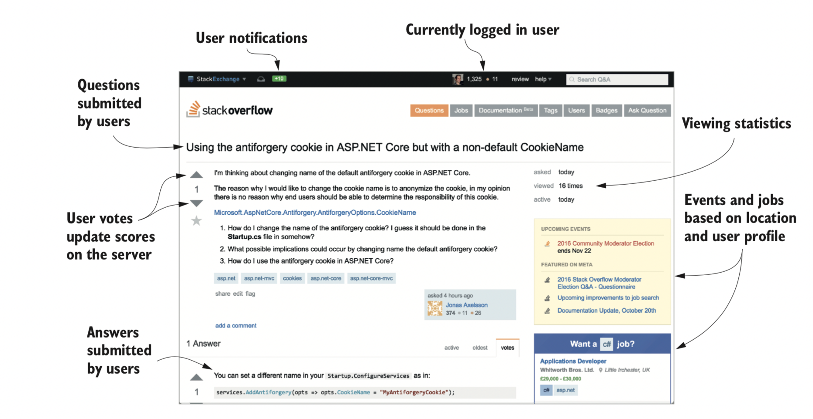

图1.1 Stack Overflow网站(http://stackoverflow.com)是使用ASP.NET，几乎完全是动态内容。
1.1.2 ASP.NET的优点和局限性
要了解Microsoft为什么决定建立新框架，重要的是要了解现有ASP.NET WebFramework的优点和局限性。 作为对.NET Framework 1.0的一部分，ASP.NET的第一个版本于2002年发布，以响应当时传统的经典ASP和PHP脚本环境.ASP.NET Web Forms 允许开发人员使用图形设计器和简单的事件模型快速创建Web应用程序，这些事件反映了桌面应用程序构建技术。 ASP.NET Framework允许开发人员快速创建新的应用程序，但是随着时间的流逝，Web开发生态系统发生了变化。很明显ASP.NET Web Forms存在许多问题，尤其是在构建更大的应用程序时。特别是，由于缺乏可测试性，复杂的状态模型以及对生成的HTML的影响有限（使客户端开发变得困难），导致开发人员不得不评估其他选项。 作为响应，Microsoft在2009年基于Model-View-Controller模式发布了ASP.NET MVC的第一个版本，该模式在其他框架（如Ruby on Rails、Django和Java Spring）中使用的通用Web设计模式。该框架使您可以将UI元素与应用程序逻辑分离，简化测试，并提供对HTML生成过程的更严格控制。 自从首次发布以来，ASP.NET MVC已经经历了四次迭代，但是他们都基于System.Web.dll文件提供相同基础框架构建。该库是.NET Framework的一部分，因此预装了所有库。